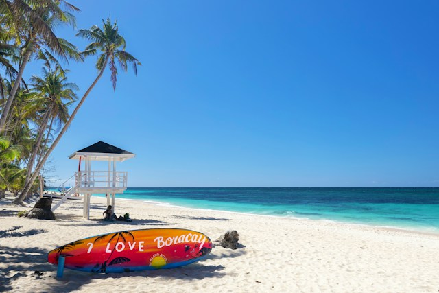
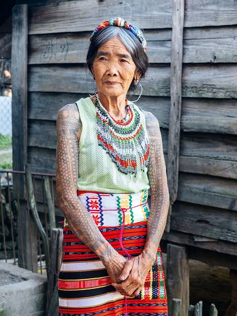
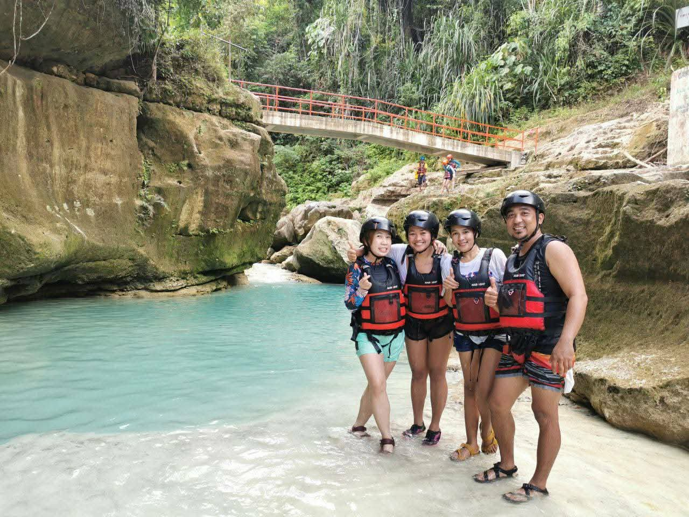
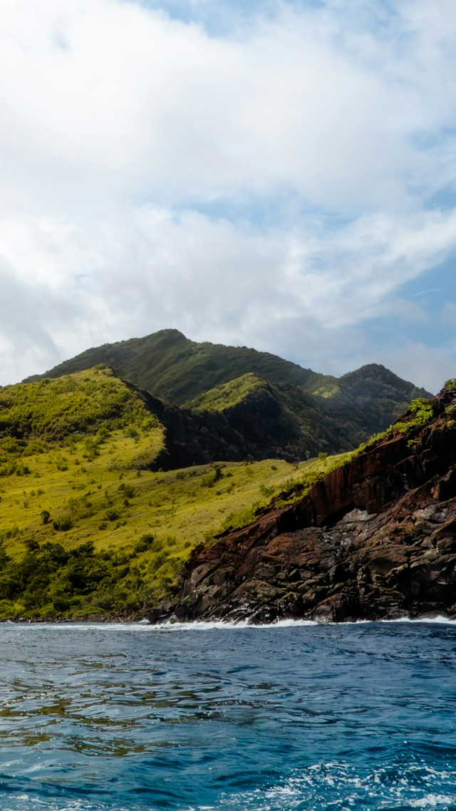
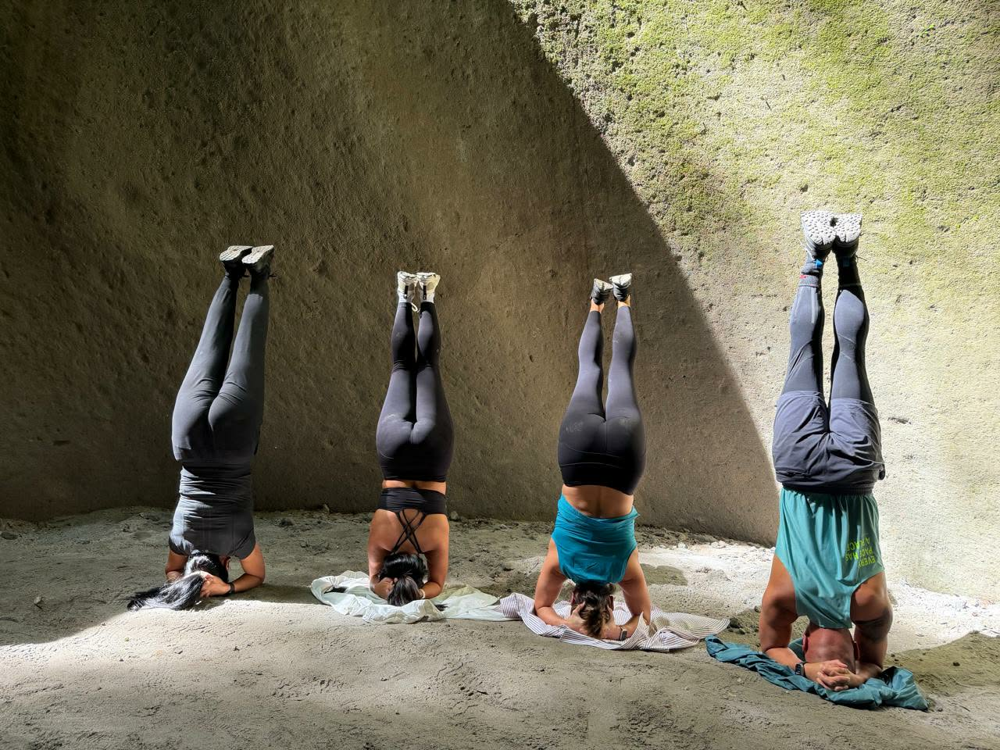
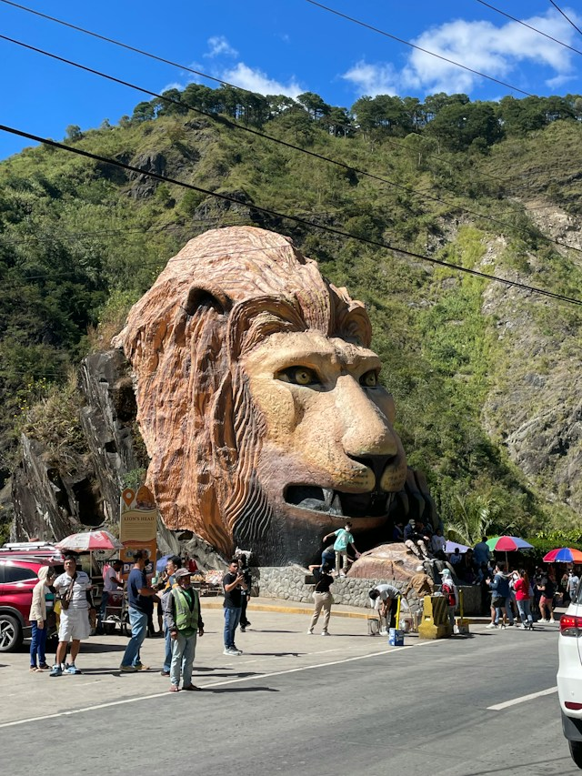

EXPLORE THE PHILIPPINES
Find Your Next Adventure
From breathtaking beaches to peaceful mountain escapes, discover the beautiful places that make the Philippines unforgettable.
Discover PlacesWHERE WILL YOU GO?
Discover the Beauty Around You
Every destination has a story to tell. Explore stunning landscapes, experience local culture, and find inspiration for your next journey with RA TRAVELS.

01 / BEACH ESCAPEAKLAN, PHILIPPINES
Boracay Island
Famous for its powdery white sand and clear turquoise waters, Boracay is a favorite destination for beach lovers and travelers looking for a tropical escape.
What to experience
- Relax along the famous White Beach
- Enjoy island hopping and water activities
- Watch a beautiful sunset by the sea

02 / CULTURAL JOURNEYKALINGA, PHILIPPINES
Buscalan
Nestled in the mountains of Kalinga, Buscalan offers scenic views and an opportunity to learn about local traditions and the community's cultural heritage.
What to experience
- Admire the surrounding mountain landscapes
- Learn about local culture and traditions
- Experience a memorable highland adventure

03 / ISLAND ADVENTURECEBU, PHILIPPINES
Cebu
Cebu brings together beautiful coastlines, waterfalls, island adventures, and rich history. It is a destination for travelers who want a mix of relaxation and exploration.
What to experience
- Discover waterfalls and natural attractions
- Explore beaches and nearby islands
- Experience Cebu's food and local heritage

04 / COASTAL RETREATZAMBALES, PHILIPPINES
Zambales
Zambales is known for its coastal scenery, mountain backdrops, and peaceful coves. It is a great choice for travelers who enjoy outdoor adventures and seaside views.
What to experience
- Visit scenic coves and beaches
- Enjoy camping and outdoor activities
- Take in beautiful coastal and mountain views

05 / NATURE ESCAPEPORAC, PAMPANGA
Inararo
Escape the busy city and discover the natural scenery around Inararo. Its green landscapes and mountain surroundings make it an appealing destination for nature-loving travelers.
What to experience
- Enjoy scenic views of the countryside
- Spend time outdoors surrounded by nature
- Take photographs of the landscape

06 / MOUNTAIN RETREATBAGUIO CITY, PHILIPPINES
Baguio City
Known for its cool climate, pine trees, gardens, and mountain atmosphere, Baguio is a relaxing getaway for travelers who want a refreshing change of scenery.
What to experience
- Visit parks and colorful gardens
- Explore local markets and cafés
- Enjoy the cool mountain atmosphere
YOUR NEXT CHAPTER AWAITS
Ready to Turn Your Travel Dreams into Memories?
Find a trip that suits your next adventure with RA TRAVELS.
View Our Tour Packages